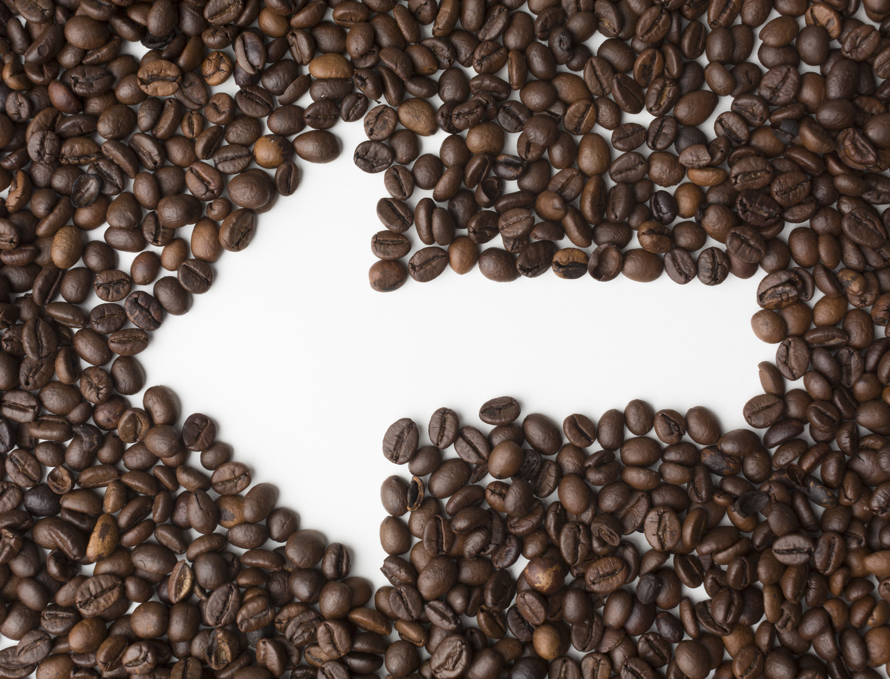

Nuestros productos


Kit de cata
Tres origenes del cauca para provar
$ 48.000
Nuestra Paleta de colores
Partimos de un color base (café tostado) y en HSL variamos
solo la luminosidad Para obtener
tonos; Luego sumamos
un secundario y un acento.
Primario 900
#372010
Primario 700
#372010
Primario 500
#372010
Primario 300
#372010
Primario 100
#372010
Secundario
#372010
Acento
#372010